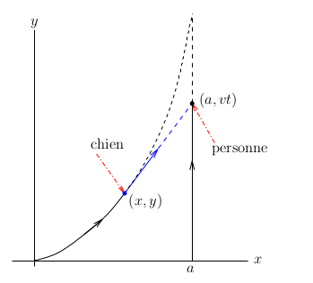

Systèmes d'EDO nonlinéaires
Ceci est la deuxième partie de notre introduction à l'usage de Maple pour l'étude des systèmes d'EDO. Nous avons traité les systèmes d'EDO linéaires dans le premier document . Nous assumons que le lecteur a lu ce document en premier.
Systèmes d'EDO nonlinéaires et autonomes
Il n'existe pas de méthodes générales pour résoudre les systèmes d'EDO nonlinéaires et autonomes. Nous avons souvent aucun autre choix que de faire une analyse qualitative du système et/ou de résoudre le système numériquement.
Équation de Van der Pol
Considérons le système d'EDO d'ordre un associé à l'équation de Van der Pol \(\displaystyle x''(t)+ \epsilon x'(t) (x^2(t)-1) + x(t) = 0\).
> restart: with(plots):
eq2 := { diff(x1(t),t) = x2(t), diff(x2(t),t) = -epsilon*x2(t)*(x1(t)^2-1)-x1(t)};
\[
eq2 := \left\{ \frac{\text{d}}{\text{d}t} x1 = x2(t), \frac{\text{d}}{\text{d}t} x2(t) = -\epsilon x2(t) (x1(t)^2-1)-x1(t) \right\};
\]
C'est une système d'EDO nonlinéaires. Nous assumons que \(\epsilon=0.1\).
> eq3 := subs(epsilon=0.1, eq2);\[ eq2 := \left\{ \frac{\text{d}}{\text{d}t} x1 = x2(t), \frac{\text{d}}{\text{d}t} x2(t) = -0.1 x2(t) (x1(t)^2-1)-x1(t) \right\}; \]
Puisqu'il sera révélateur de tracer les orbites associées à plusieurs conditions initiales, nous avons écrit une procédure dans Maple pour tracer ces orbites.
> graph := proc (a, b, T, clr)
local X;
X := dsolve(eq3 union {x1(0) = a, x2(0) = b}, [x1(t), x2(t)], type = numeric,
output = procedurelist, method = classical[rk4], stepsize = 0.1e-1):
RETURN(odeplot(X, [x1(t), x2(t)], 0 .. T, numpoints = floor(30*T), color = clr)):
end proc;
\[
\begin{split}
& graph := proc (a, b, T, clr)\\
& \qquad local\ X;\\
& \qquad X := dsolve(eq3\ union\ \{x1(0) = a, x2(0) = b\}, \{x1(t), x2(t)\}, type = numeric, output = procedurelist, \\
& \qquad \qquad method = classical[rk4], stepsize = 0.1e-1);\\
& \qquad RETURN(plots:-odeplot(X, [x1(t), x2(t)], 0 .. T, numpoints = floor(30*T), color = clr))\\
& end\ proc
\end{split}
\]
Note: Nous fournissons plus d'information sur la création de procédure dans Maple dans le document .
Nous traçons maintenant les orbites du système d'EDO associées à plusieurs conditions initiales.
> gr1 := graph(4,1,5*Pi,"red"):
gr2 := graph(-1,3,5*Pi, "blue"):
display({gr1,gr2},axes=normal,labels=[`x1`,`x2`],gridlines=true);

> gr3:= graph(0.5,0.5,5*Pi,"red"):
gr4:= graph(-1,1,5*Pi,"blue"):
display({gr3,gr4},axes=normal,labels=[`x1`,`x2`],gridlines=true);

Dans la première figure, les orbites semblent converger vers l'origine en tournant autour de l'origine dans le sens contraire des aiguilles d'une montre. La façon la plus simple de déterminer la direction d'une orbite est probablement de repérer en premier le point associé à la condition initiale. Cependant, dans la deuxième figure, les orbites semblent s'éloigner de l'origine en tournant autour de l'origine dans le sens contraire des aiguilles d'une montre. Cela ne peut pas durer pour toujours car les orbites ne peuvent pas se couper et elles varies de façon continue par rapport aux conditions initiales. Que ce passe-t-il?
Nous devons regarder le champ de vecteurs de ce système d'EDO d'ordre un. Nous traçons aussi quelques orbites dans la figure qui contient le champ de vecteurs.
> with(DEtools);
DEplot(eq3, [x1(t), x2(t)], t = 0 .. 8*Pi,
[[x1(0) = .5, x2(0) = .5], [x1(0) = 2, x2(0) = 2]], linecolor = [blue, red],
thickness = 2, color = black, stepsize = 0.1e-1, arrows = small);

Toute les orbites convergent vers une solution périodique. L'orbite qui part de \((2,2)\) (extérieur de la solution périodique) approche de très près la solution périodique. Nous devons admettre que ce n'est pas une démonstration de l'existence de l'unique solution périodique mais c'est une bonne indication de son existence.
Note: Il y a plusieurs autres fonctions de Maple qui peuvent être utilisées pour dessiner les champs de vecteurs: odeplot( ) et même fieldplot si nous considérons que le côté droit d'une système d'EDO est un champ de vecteur.
Pendule nonlinéaire
Considérons le pendule formé d'une tige très légère de longueur \(L\) avec une petite balle de masse \(m\) attachée à une des extrémités de la tige comme dans la figure ci-dessous.
> with(plots):with(plottools):
gr1:=line([0,0], [0,-14], color=black, linestyle=3):
gr2:=line([0,0], [3,-5], color=black):
gr3:=disk([3,-5], 0.25, color=green):
gr4:=arrow([3,-5], [1/2,-13/2], 0.02,0.3,0.2, color=black):
gr5:=line([1/2,-13/2], [3,-32/3], color=black, linestyle=3):
gr6:=arrow([3,-5], [3,-32/3], 0.02,0.3,0.1, color=black):
gr7:=textplot([4,-9,"mg"], font=[COURIER,12],align={LEFT}):
gr8:=textplot([-2,-4,"mg sin("], font=[COURIER,12],align={LEFT}):
gr9:=textplot([-1.8,-4,'q'], font=[SYMBOL,12],align={LEFT}):
gr10:=textplot([-1.6, -4, ")"], font = [COURIER, 12], align = {LEFT}):
gr11:=arc([3,-35/3],2.5, Pi/2..3*Pi/5):
gr12:=textplot([2.2,-8,'q'], font=[SYMBOL,12],align={RIGHT}):
gr13:=arrow([-3,-4.5],[2,-5.4], 0.02,0.3,0.1, color=black):
gr14:=textplot([2.1,-3,'L'], font=[COURIER,12],align={RIGHT}):
display({gr1,gr2,gr3,gr4,gr5,gr6,gr7,gr8,gr9,gr10,gr11,gr12,gr13,gr14},
view=[-6..6,-14..0.5], axes=none, scaling=constrained);

Si nous utilisons la lois de Newton force égale masse
fois accélération
, nous trouvons alors que l'angle
θ satisfait l'EDO qui est définie
par la commande suivante dans Maple.
> eq4 := m*L*diff(theta(t),t$2) = -k*L*diff(theta(t),t) -m*g*sin(theta(t));\[ eq4 := m L \left( \frac{\text{d}^2}{\text{d}t^2} \theta(t) \right) = -k L \left(\frac{\text{d}}{\text{d}t} \theta(t) \right) - m g \sin(\theta(t)) \]
Nous avons que g = 9.8 m/s2 est l'accélération due à la gravité et k est une constante de proportionnalité entre la force dû à la friction et la vélocité. Nous pouvons réécrire cette EDO pour obtenir un système d'EDO d'ordre un.
> eq5:={ diff(theta(t),t)=v(t), diff(v(t),t)=-(k*g/m)*v(t) -(g/L)*sin(theta(t))};
\[
eq5 := \left\{ \frac{\text{d}}{\text{d}t} \theta(t) = v(t), \frac{\text{d}}{\text{d}t} v(t) = -\frac{k g v(t)}{m} - \frac{g \sin(\theta(t))}{L} \right\}
\]
Dans la formule ci-dessus, v(t) est la vélocité angulaire au temps \(t\).
Pendule idéal
Le pendule idéal n'a pas de friction; c'est-à-dire, k=0. Nous assumons que L=3 m et m=0.5 kg. La masse n'a pas d'importance s'il n'y a pas de friction.
> eq6 := subs({k=0, g=9.8, m=0.5, L=3}, eq5);
\[
eq6 := \left\{ \frac{\text{d}}{\text{d}t} \theta(t) = v(t), \frac{\text{d}}{\text{d}t} v(t) = -3.266666667 \sin(\theta(t)) \right\}
\]
Nous avons l'intention de tracer la solution dans les deux cas suivants:
- On laisse tomber le pendule à partir d'un angle de \(\pi/4\). Donc, θ(0)=π/4 et v(0)=0.
- Nous poussons le pendule vers le haut à partir d'un angle de \(\pi/4\) et avec une vélocité de \(4\) m/s. Donc, θ(0)= π/4 et v(0)=4 m/s.
Puisque nous avons à dessiner des orbites du système d'EDO d'ordre un pour plusieurs conditions initiales, il est utile de réintroduire la procédure (après quelques modifications) que nous avons utilisée précédemment.
> graph := proc (a, b, T, clr)
local X:
X := dsolve(eq6 union {theta(0) = a, v(0) = b}, {theta(t), v(t)}, type = numeric,
output = procedurelist, method = classical[rk4], stepsize = 0.1e-1):
RETURN(odeplot(X, [theta(t), v(t)], 0 .. T, color = clr)):
end proc;
\[
\begin{split}
& graph := proc (a, b, T, clr)\\
& \qquad local\ X;\\
& \qquad X := dsolve(eq6\ union\ \{theta(0) = a, v(0) = b\},
\{theta(t), v(t)\}, type = numeric, output = procedurelist,\\
& \qquad \qquad method = classical[rk4], stepsize = 0.1e-1);\\
& \qquad RETURN(plots:-odeplot(X, [theta(t), v(t)], 0 .. T, color = clr))\\
& end\ proc
\end{split}
\]
Les orbites des deux solutions particulières sont dessinées dans la figure ci-dessous.
> pendul1 := graph(Pi/4,0,2*Pi,"red"):
pendul2 := graph(Pi/4,4,Pi,"blue"):
display({pendul1,pendul2}, axes=normal, labels=[`theta`,`v`],gridlines=true);

Pour l'orbite en rouge, le pendule oscille d'un côté à l'autre pour toujours. Pour l'orbite en bleu, le pendule tourne en rond car la vitesse initiale était forte. Puisqu'il n'y a pas de friction, le mouvement du pendule est perpétuel.
Nous dessinons dans une même figure le champ de vecteurs du système d'EDO d'ordre un ainsi que les orbites des deux solutions particulières ci-dessus. .
> with(DEtools):
DEplot(eq6,[theta(t),v(t)], t=0..1.5*Pi, [[theta(0)=Pi/4,v(0)=0], [theta(0)=Pi/4,v(0)=4]],
linecolor=[blue,black], thickness=2, color=green, stepsize=0.01, arrows=small);

Pendule avec friction
Cette fois, nous n'ignorons pas la friction. Nous assumons que k=0.1. Nous gardons les valeurs L=3 m et m=0.5 kg.
> eq6 := subs({m=0.5, g=9.8, L=3, k=0.1},eq5);
\[
eq6 := \left\{ \frac{\text{d}}{\text{d}t} \theta(t) = v(t), \frac{\text{d}}{\text{d}t} v(t) = -1.960000000 v(t)-3.266666667 \sin(\theta(t)) \right\}
\]
Puisque nous utilisons le même nom eq6 pour désigner le nouveau système d'EDO d'ordre un, la procédure graph() définie ci-dessus peut encore être utilisée dans le contexte présent.
Comme pour le pendule idéal, nous considérons deux cas:
- Nous laissons tomber le pendule à partir d'un angle de \(\pi/4\). Donc, θ(0)=π/4 et v(0)=0.
- Nous poussons le pendule vers le haut à partir d'un angle de \(\pi/4\) et avec une vélocité de \(8\) m/s. Donc, θ(0)= π/4 et v(0)=8 m/s.
Les orbites de ces deux solutions particulière sont dessinées dans la figure suivante.
> pendul1:=graph(Pi/4,0,3*Pi,"red"):
pendul2:=graph(Pi/4,8,3*Pi, "blue"):
display({pendul1,pendul2}, axes=normal, labels=[`theta`,`v`].gridlines=true);

Nous dessinons dans la même figure le champ de vecteurs du système d'EDO d'ordre un et les orbites des deux solution particulières ci-dessus.
> DEplot(eq6,[theta(t),v(t)], t=0..1.3*Pi, [[theta(0)=Pi/4,v(0)=0], [theta(0)=Pi/4,v(0)=8]], linecolor=[red,blue], thickness=2, color=black, stepsize=0.01, arrows=small);

Pour l'orbite en rouge, l'oscillation du pendule va en diminuant. Pour l'orbite en bleu, après une rotation complète, le pendule oscille et l'oscillation va aussi en diminuant.
Systèmes d'EDO nonlinéaires, autonomes et non-homogèenes.
Systèmes d\EDO nonlinéaires et non-autonomes
L'analyse des systèmes d'EDO nonlinéaires et non-autonomes est plus difficile que l'analyse des systèmes d'EDO nonlinéaires et autonomes. En particulier, le système d'EDO \(\vec{x}'= f(t,\vec{x})\) ne défini pas un champ de vecteurs car le côté droit dépend explicitement de \(t\). Nous allons seulement donner un exemple pour illustrer comment Maple peut être utilisé pour étudier tels systèmes d'EDO.
Exemple: Un gentil chien court après une personne. Le chien commence à courir à partir de l'origine quand la personne traverse l'axe des \(x\) comme il est représenté dans la figure ci-dessous.

La personne marche en ligne droite à une vitesse de \(v\) km/h. La direction du chien est toujours vers la personne. De plus, le chien court a une vitesse constante de \(v_d\) km/h. La position du chien est décrite par des EDO que nous allons déduire ci-dessous.
Première méthode: Puisque le chien court toujours vers la personne, nous avons que
\[ \begin{equation} \label{Equ1} \frac{\text{d}y}{\text{d}x} = \frac{y-v t}{x-a} \ . \end{equation} \]Puisque la vitesse \(v_d\) à laquelle le chien court est constante, nous avons que
\[ \begin{equation} \label{Equ2} v_d = \left( \left( \frac{\text{d}x}{\text{d}t} \right)^2 + \left( \frac{\text{d}y}{\text{d}t} \right)^2 \right)^{1/2} = \frac{\text{d}x}{\text{d}t} \left( 1 + \left( \frac{\text{d}y}{\text{d}x} \right)^2 \right)^{1/2} \ , \end{equation} \]où nous avons déduit de la figure ci-dessus que les dérivées de \(x\) et \(y\) par rapport à \(t\) sont positives. Si nous dérivons l'équation \(\displaystyle (x-a) \frac{\text{d}y}{\text{d}x} = y-v t\) par rapport à \(t\), nous obtenons
\[ (x-a) \frac{\text{d}^2y}{\text{d}x^2} \frac{\text{d}x}{\text{d}t} + \frac{\text{d}y}{\text{d}x} \frac{\text{d}x}{\text{d}t} = (x-a) \frac{\text{d}^2y}{\text{d}x^2} \frac{\text{d}x}{\text{d}t} + \frac{\text{d}y}{\text{d}t} = \frac{\text{d}y}{\text{d}t} - v \ . \]Donc
\[ (x-a) \frac{\text{d}^2y}{\text{d}x^2} = -v\, \left(\frac{\text{d}x}{\text{d}t}\right)^{-1} = -\frac{v}{v_d} \left( 1 + \left( \frac{\text{d}y}{\text{d}x} \right)^2 \right)^{1/2} \ . \]Ce n'est pas le genre d'EDO que l'on peut résoudre avec les techniques usuelles qui sont enseignées dans les cours d'EDO. En particulier, c'est une EDO nonlinéaire. Nous allons donc la résoudre numériquement. Nous assumons que \(a= 0.5\) km, \(v = 3\) kn/h et \(v_d = 10\) km/h. Nous traçons le graphe de \(y\) en fonction de \(x\).
> restart: with(plots):
equ := vd*(a-x)*diff(y(x),x$2) = v*(1 + ( diff(y(x),x))^2)^(1/2);
equP := subs({a=0.5, v=3, vd=10},equ);
solP := dsolve({equP, y(0)=0, D(y)(0)=0},y(x),type=numeric,output=procedurelist,
method=rkf45, range=0..0.499);
odeplot(solP, 0..0.499,axes=BOXED,labels=[`x`,`y`],refine=2,gridlines=true);
\[
\begin{split}
& equ := vd\,(a - x) \left( \frac{\text{d}^2}{\text{d}x^2} y(x)\right)
= v\,\sqrt{1 + \left(\frac{\text{d}}{\text{d} x} y(x) \right)^2} \\
& equP := 10\,(0.5 - x) \left( \frac{\text{d}^2}{\text{d}x^2} y(x)\right)
= 3\,\sqrt{1 + \left(\frac{\text{d}}{\text{d} x} y(x) \right)^2} \\
& solP := \text{proc(x\_rkf45) \ldots end proc}
\end{split}
\]

Nous intégrons l'EDO jusqu'à \(x = 0.499 \) car \(\displaystyle \frac{\text{d}}{\text{d} x} y(x) \to \infty\) lorsque \(x \to 0.5\). En théorie, le chien rattrape la personne lorsque \(x = 0.5\) km. \(x \to 0.5\). Si nous résolvons l'ODE sur l'intervalle \([0,0.4999999]\), alors nous obtenons fondamentalement la même figure que celle ci-dessus. Donc, nous pouvons assumer que \(y \approx 0.162\) km lorsque le chien rattrape la personne.
Qu'arrive-t-il si nous avons un très petit chien ou un chien très paresseux qui court seulement à \(2\) km/h? Nous avons maintenant que \(a= 0.5\) km, \(v = 3\) kn/h et \(v_d = 2\) km/h. Nous traçons le graphe de \(y\) en fonction de \(x\).
> equP := subs({a=0.5, v=3, vd=2},equ);
solP := dsolve({equP, y(0)=0, D(y)(0)=0},y(x),type=numeric,output=procedurelist,
method=rkf45, range=0..0.499):
odeplot(solP, 0..0.499,axes=BOXED,labels=[`x`,`y`],refine=2,gridlines=true);
\[
equP := 2\,(0.5 - x) \left( \frac{\text{d}^2}{\text{d}x^2} y(x)\right)
= 3\,\sqrt{1 + \left(\frac{\text{d}}{\text{d} x} y(x) \right)^2}
\]

Si on résout l'EDO sur l'intervalle \([0,0.4999999]\), alors nous obtenons la figure suivante.
> solP := dsolve({equP, y(0)=0, D(y)(0)=0},y(x),type=numeric,output=procedurelist,
method=rkf45, range=0..0.4999999):
odeplot(solP, 0..0.4999999,axes=BOXED,labels=[`x`,`y`],refine=2,gridlines=true);

Le pauvre chien court toujours après la personne après plus de \(1100\) km. Dans ce cas, le chien ne rattrapera jamais la personne si on suppose que la personne va marcher à la même vitesse pour toujours.
Deuxième méthode: La première méthode a un inconvénient. Elle ignore complètement le temps. En particulier, si les vitesses de la personne et du chien variaient avec le temps, nous ne pourrions pas déterminer combien de temps prend le chien pour rattraper la personne. Nous allons donc déduire un système d'EDO qui décrit la position du chien en fonction du temps. Notre déduction sera encore basées sur les relations \eqref{Equ1} et \eqref{Equ2} ci-dessus.
Nous obtenons de \eqref{Equ1} que
\[ \begin{equation} \label{Equ3} \frac{\text{d}y}{\text{d}t} = \frac{y-v t}{x-a} \, \frac{\text{d}x}{\text{d}t} \ . \end{equation} \]Si on substitue \eqref{Equ3} dans \eqref{Equ2}, nous obtenons
\[ \frac{\text{d}x}{\text{d}t} = v_d \left( 1 + \left( \frac{y-vt}{x-a}\right)^2\right)^{-1/2} = \frac{ v_d (a - x) }{ \sqrt{(x-a)^2 + (y-vt)^2}} \ . \]Puisque que nous assumons que \(x < a\), nous avons que \( \sqrt{(x-a)^2} = a - x\). Si nous substituons cette expression dans \eqref{Equ3}, nous obtenons
\[ \frac{\text{d}y}{\text{d}t} = \frac{ v_d (y-v t) }{ \sqrt{(x-a)^2 + (y-vt)^2}} \ . \]Nous avons donc le système d'EDO suivant.
> eq1 := diff(x(t),t) = vd*(a -x(t))/sqrt((x(t)-a)^2+(y(t)-v*t)^2);
eq2 := diff(y(t),t) = vd*(v*t - y(t))/sqrt((x(t)-a)^2 +(y(t)-v*t)^2);
eq := {eq1, eq2, x(0) = 0, y(0) = 0 };
\[
\begin{split}
& eq := \bigg\{\frac{d}{d t}x (t) = \frac{vd \left(a -x(t)\right)}
{\sqrt{\left(x(t)-a \right)^{2}+\left(y(t)-v t \right)^{2}}},
\frac{d}{d t}y (t) = \frac{vd \left(v t -y(t)\right)}
{\sqrt{\left(x(t)-a \right)^{2}+\left(y(t)-v t \right)^{2}}},\\
& x(0) = 0,y(0) = 0\bigg\}
\end{split}
\]
Comme nous avons fait précédemment, nous assumons que \(a= 0.5\) km, \(v = 3\) kn/h et \(v_d = 10\) km/h. Nous dessinons l'orbite \( \{ (x(t),y(t)): 0 \leq t \leq 0.1 \} \) qui représente la position du chien lorsque \(t\) augmente.
> eqP := subs({a=0.5,v=3,vd=10}, eq);
solP := dsolve(eqP, [x(t),y(t)], type=numeric, method = rkf45,
output =procedurelist, range=0..0.0551):
odeplot(solP,[x(t),y(t)],t=0..0.0551,labels=[`x(t)`,`y(t)`],
axes=BOXED,refine=2,gridlines=true);
\[
\begin{split}
& eq := \bigg\{\frac{d}{d t}x (t) = \frac{10 \left(0.5 -x(t)\right)}
{\sqrt{\left(x(t)- 0.5 \right)^{2}+\left(y(t)-3 t \right)^{2}}},
\frac{d}{d t}y (t) = \frac{10 \left(3 t -y(t)\right)}
{\sqrt{\left(x(t)- 0.5 \right)^{2}+\left(y(t)- 3 t \right)^{2}}},\\
& x(0) = 0,y(0) = 0\bigg\}
\end{split}
\]

Si nous essayons d'intégrer pour \( t > 0.055\ldots \), alors Maple affiche le message suivant.
\[ \text{Warning, cannot evaluate the solution further right of .55107367e-1, maxfun limit exceeded (see ?dsolve,maxfun for details)} \]Le problème est que \(x(t),y(t)) \to (0.5, 0.165\ldots )\) lorsque \( t \to 0.055\ldots \). L'EDO n'est pas définie pour \( (t,x,y) \approx (0.0551, 0.5, 0.1653)\). C'est le temps et la position lorsque le chien rattrape la personne. Donc, le chien prend environ 3 minutes et 18 secondes pour rattraper la personne.